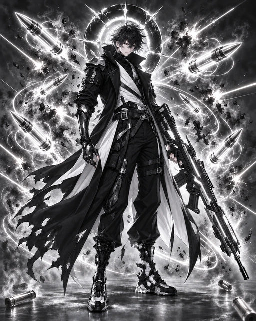

PROJECT V
MONOCHROME ARTILLERY
백색 포격
백색 광륜 · 은탄 낙인 · 망령 포대
HEAD & HALO · REVISION 02
전체 시연
전장 준비 중
리소스를 불러오는 중입니다
0.00 / 6.00초
재생
처음부터
적중 순간
중단
속도
0.25배
0.5배
1배
2배
머리 광륜
동작 줄이기
소리
01 · IDLE
백색 광륜
머리 뒤 후광 · 은탄 정렬
02 · SHOT
정밀 사격
총구 점화 · 단발 관통
03 · SKILL
백탄 낙인
세 발의 은탄 · 해골 표식
04 · ARTILLERY
망령 포대
자주포 전개 · 연쇄 폭쇄

APPROVED ART
원화 V3
머리 뒤 백색 광륜과 총구 앞 은탄
재생 검수
동작
대기
사격
스킬
광역기
상황
정상
시전 중단
대상 소실
동작만 보기
녹화 영상
리소스 목록